RDF
Mikel Egaña Aranguren
mikel-egana-aranguren.github.io

Mikel Egaña Aranguren
Mikel Egaña Aranguren
mikel-egana-aranguren.github.io
https://github.com/mikel-egana-aranguren/ABD

Proyecto utópico para una nueva World Wide Web: cada recurso publica sus datos y los agentes inteligentes los consumen de manera autónoma
Se ha implementado parcialmente (Ej. JSON-LD + Schema: Google Knowledge Graph)
LLMs?
Stack de tecnologías:
RDF: Resource Description Framework
Estándar oficial del W3C para representar recursos en la web
Actualmente su uso está creciendo en el entorno empresarial para representar datos en Knowledge Graphs (KGs) para implementar arquitecturas centradas en datos: por ejemplo Netflix
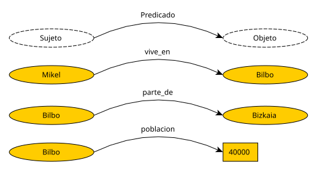
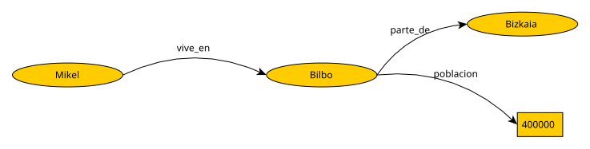
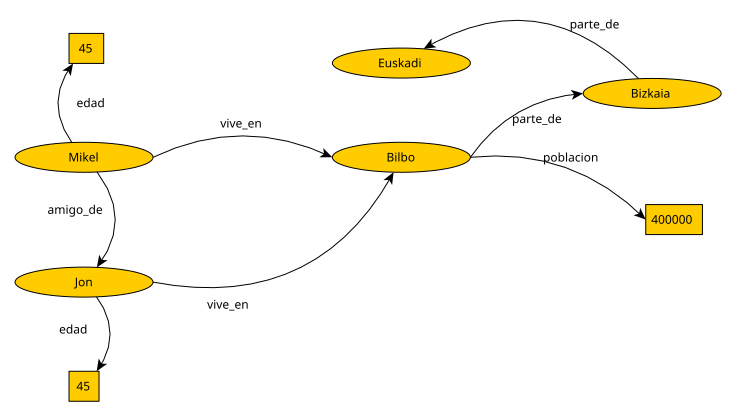
Todas las entidades del grafo se identifican mediante URIs
URI: Uniform Resource Identifier (≠ URL!). Identifica recursos: http://www.wikidata.org/entity/Q8692
URL: Uniform Resource Locator. Una URI que indica la localización física de un documento (Que describe a un recurso) en la red: https://www.wikidata.org/wiki/Q8692
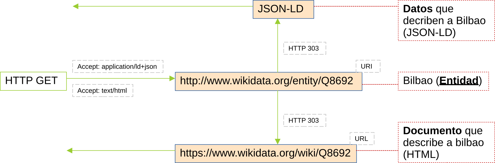
(Ejecutar ejemplo)
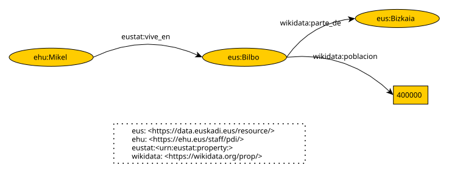
Los sujetos y predicados sólo pueden ser recursos (URIs)
Algunos objetos pueden ser valores literales (Cadenas de caracteres)
Los valores literales pueden tener tipo (XML Schema datatypes)
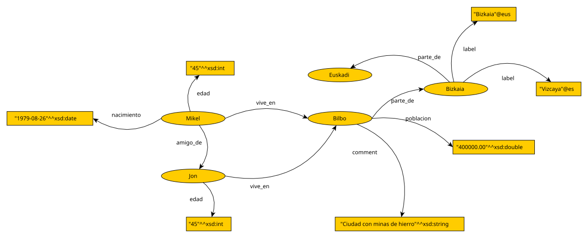
RDF es un modelo de datos
Ese modelo abstracto se puede representar con diferentes sintaxis: "Serializar" (escribir) en un archivo
Una de esas sintaxis es RDF/XML
No confundir el modelo con la sintaxis: ¡RDF es mucho más que un archivo XML!
RDF/XML (http://www.w3.org/TR/rdf-syntax-grammar/)
RDFa (http://www.w3.org/TR/rdfa-core/)
Turtle (http://www.w3.org/TR/turtle/)
N3 (http://www.w3.org/DesignIssues/Notation3.html)
JSON-LD (https://www.w3.org/TR/json-ld11/)
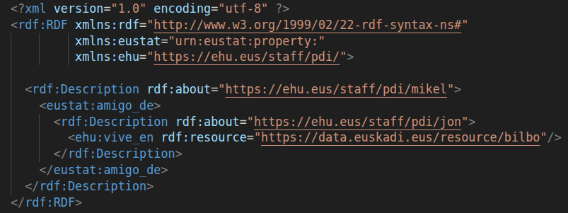
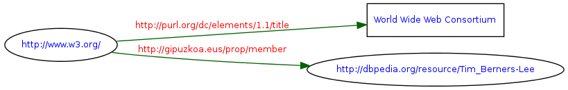
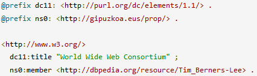
http://www.w3.org/RDF/Validator/
RDF es un estándar del W3C (=HTML, !=SQL), dado un archivo RDF:
Las Triple Stores surgieron cuando internet ya existía (NoSQL!):
Agrupar triples en una "bolsa" identificada por una URI (Diferente de los datos): Named Graphs
Dependiente de implementación: todas las Triple Stores tienen un Default Graph que contiene todos los triples
[Ejecutar ejemplo]
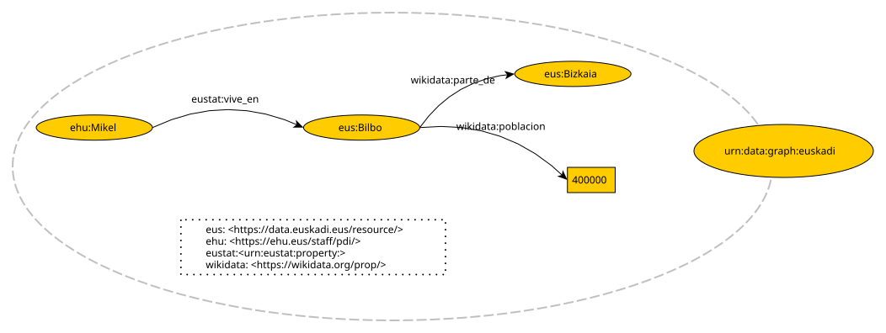
[Ejecutar ejemplo]
Datos y metadatos en el mismo lenguaje (NoSQL! RDF!)
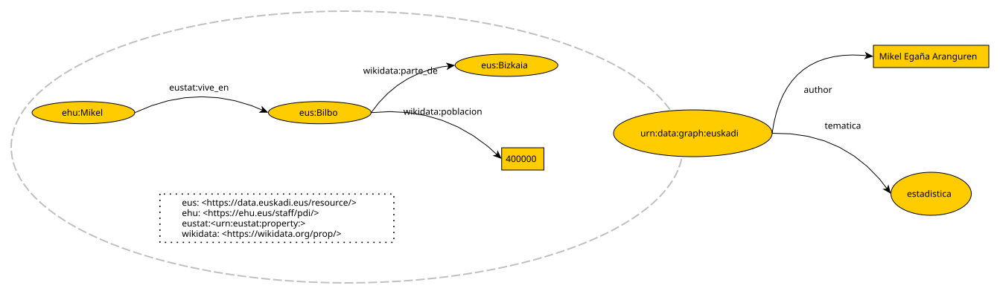
Datos y metadatos en el mismo lenguaje (NoSQL! RDF!)
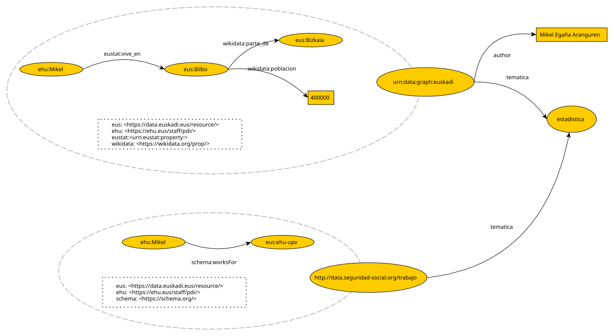
Default Graph
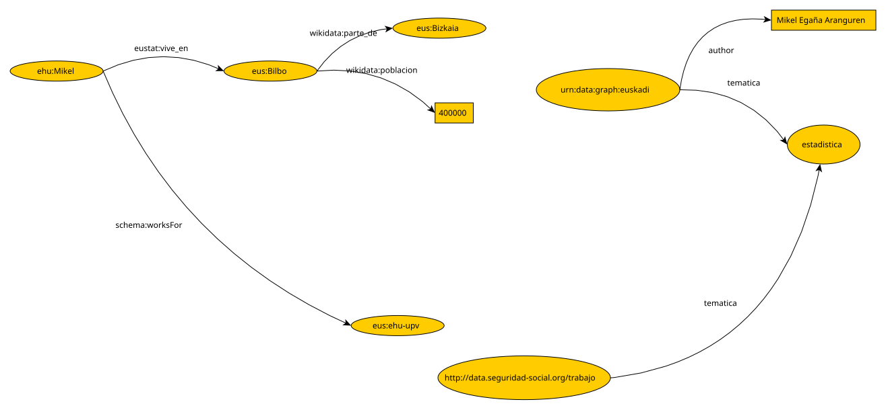
[Ejecutar ejemplos]
Predicado rdf:type: Agrupar recursos en clases
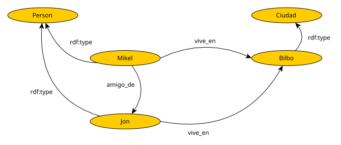
[Ejecutar ejemplo - Class hierarchy]
Definen el lenguaje mismo
RDF: http://www.w3.org/1999/02/22-rdf-syntax-ns# (Ej. rdf:type = http://www.w3.org/1999/02/22-rdf-syntax-ns#type), definido por RDF (Se define a si mismo), RDFS y OWL
RDFS: http://www.w3.org/2000/01/rdf-schema# definido por RDF, RDFS (Se define a si mismo) y OWL
Definen el lenguaje mismo
SHACL: https://www.w3.org/ns/shacl.ttl definido por RDF, RDFS y OWL
OWL: http://www.w3.org/2002/07/owl# definido por RDF, RDFS y OWL (Se define a si mismo)
Describen un dominio concreto de la realidad: comercio, genes, geografia, instituciones, ...
Definen propiedades generales de los datos que queremos publicar
foaf:person, dbpedia-ont:city, dc:book, schema:person, ...
RDF: datos específicos (Mikel, Jon, Bilbo, ...)
Ontologías (RDFS, OWL): propiedades generales de esos datos (Persona, Ciudad, ...)
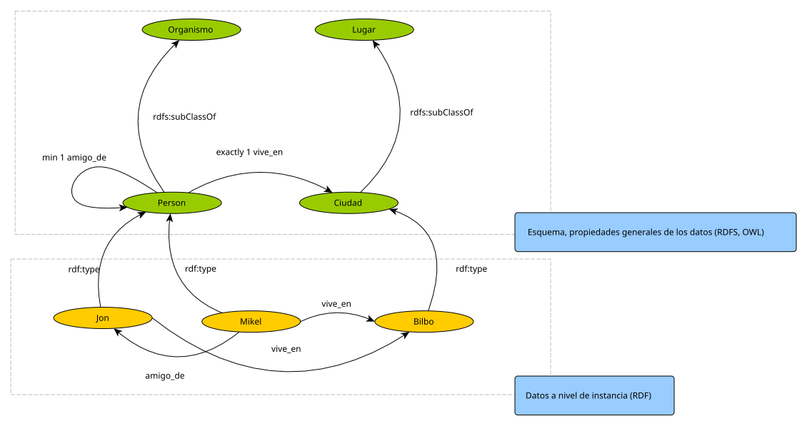
Nodos anónimos sin URI: recursos sin identificador global
Se usan cuando no necesitamos referenciar el recurso desde fuera
Sintaxis Turtle: _:b1, _:b2, ... o []
Problema: no se pueden enlazar desde otros grafos (≠ Linked Data)
@prefix ex: <http://example.org/> .
@prefix foaf: <http://xmlns.com/foaf/0.1/> .
ex:Mikel foaf:knows [
foaf:name "Jon" ;
foaf:mbox <mailto:jon@example.org>
] .El recurso "Jon" no tiene URI propia
Hacer afirmaciones sobre afirmaciones (meta-triples)
Necesario para expresar: confianza, procedencia, temporalidad
Tradicionalmente: rdf:Statement, rdf:subject, rdf:predicate, rdf:object
RDF 1.1: Named Graphs (más eficiente)
@prefix rdf: <http://www.w3.org/1999/02/22-rdf-syntax-ns#> .
@prefix ex: <http://example.org/> .
ex:statement1 rdf:type rdf:Statement ;
rdf:subject ex:Mikel ;
rdf:predicate ex:livesIn ;
rdf:object ex:Bilbao ;
ex:confidence "0.9"^^xsd:float .Listas ordenadas: rdf:List, rdf:first, rdf:rest, rdf:nil
Sintaxis Turtle abreviada: ( elemento1 elemento2 elemento3 )
Contenedores desordenados: rdf:Bag, rdf:Seq, rdf:Alt
Uso moderno: usar predicados específicos del dominio
@prefix ex: <http://example.org/> .
ex:Mikel ex:favoriteColors (
ex:Blue
ex:Green
ex:Red
) .Equivale a una lista enlazada en RDF
Literales con etiquetas de idioma (BCP 47)
"Hello"@en, "Hola"@es, "Kaixo"@eu
Permite datos multilingües en el mismo grafo
Fundamental para datos globales y open data
@prefix ex: <http://example.org/> .
@prefix rdfs: <http://www.w3.org/2000/01/rdf-schema#> .
ex:Bilbao rdfs:label "Bilbao"@es ;
rdfs:label "Bilbo"@eu ;
rdfs:label "Bilbao"@en .IRI: Internationalized Resource Identifier
Extensión de URI que permite caracteres Unicode
http://example.org/东京 (Tokio en chino)
RDF 1.1 usa IRIs, no solo URIs ASCII
rdfs:Class - definir clases
rdfs:subClassOf - jerarquías de clases
rdfs:Property - definir propiedades
rdfs:subPropertyOf - jerarquías de propiedades
rdfs:domain, rdfs:range - restricciones de propiedades
rdfs:label, rdfs:comment - anotaciones
@prefix rdfs: <http://www.w3.org/2000/01/rdf-schema#> .
@prefix ex: <http://example.org/> .
ex:Person rdfs:subClassOf ex:Agent .
ex:Student rdfs:subClassOf ex:Person .
ex:estudiaEn rdfs:domain ex:Student ;
rdfs:range ex:Universidad .Extensión reciente de RDF: permitir triples como sujetos u objetos
Sintaxis: << sujeto predicado objeto >>
Simplifica la reificación (más intuitivo que Named Graphs)
Estándar W3C en desarrollo (2024)
@prefix ex: <http://example.org/> .
<< ex:Mikel ex:livesIn ex:Bilbao >>
ex:since "2020"^^xsd:gYear ;
ex:confidence "high" .Triple anidado con metadatos directos
Usar URIs HTTP dereferenciales (303 redirect o Hash URIs)
Reutilizar vocabularios existentes antes de crear nuevos
Proporcionar labels en múltiples idiomas (rdfs:label)
Documentar vocabularios con rdfs:comment
Evitar blank nodes en datos Linked Open Data
N-ary relations: usar recursos intermedios para relaciones complejas
Qualified relations: añadir contexto a relaciones
Versioning: usar Named Graphs para versiones temporales
SHACL (Shapes Constraint Language): validar estructura de grafos RDF
ShEx (Shape Expressions): alternativa a SHACL, más concisa
Necesario para garantizar calidad de datos en producción
Diferente de OWL: validación vs inferencia
Extensión de N-Triples para Named Graphs
Cada línea: <sujeto> <predicado> <objeto> <grafo> .
Formato simple para exportar/importar múltiples grafos
Usado en dumps de grandes bases de datos (DBpedia, Wikidata)
Serialización RDF en JSON: fácil para desarrolladores web
Usado por Schema.org para metadatos en páginas web
Google, Bing, Yahoo lo procesan para mejorar búsquedas
@context define el mapeo de claves JSON a URIs RDF
{
"@context": "https://schema.org",
"@type": "Person",
"name": "Mikel Egaña",
"jobTitle": "Profesor",
"worksFor": {
"@type": "Organization",
"name": "UPV/EHU"
}
}Publicación de datos estructurados en la web de forma que puedan ser enlazados e interpretados por máquinas
Basado en estándares web: URIs, HTTP, RDF
Propuesto por Tim Berners-Lee en 2006
Una URI puede devolver diferentes representaciones según el cliente
Navegador web → HTML (para humanos)
Cliente RDF → RDF/XML, Turtle, JSON-LD (para máquinas)
Mediante HTTP Content Negotiation (cabecera Accept)
URI del recurso: http://www.wikidata.org/entity/Q8692
Página web (HTML): https://www.wikidata.org/wiki/Q8692
Datos RDF: Agregar .ttl, .rdf, .json al final de la URI
[Ejecutar ejemplo curl]
URI del recurso: http://dbpedia.org/resource/Bilbao
Página web: https://dbpedia.org/page/Bilbao
Datos RDF: https://dbpedia.org/data/Bilbao
Endpoints SPARQL públicos permiten consultas federadas
★ Datos disponibles en la web (cualquier formato) con licencia abierta
★★ Datos estructurados y legibles por máquina (ej. Excel en vez de imagen)
★★★ Formato no propietario (ej. CSV en vez de Excel)
★★★★ Usar estándares W3C (RDF, SPARQL) para identificar recursos
★★★★★ Enlazar tus datos con otros datos (contexto)

Knowledge Graphs empresariales: integración de datos heterogéneos
Open Data: datos públicos gubernamentales (ej. datos.gob.es)
Bibliotecas y archivos: catálogos bibliográficos enlazados
Ciencia: datos científicos FAIR (Findable, Accessible, Interoperable, Reusable)
Trifid: servidor Linked Data ligero
LDP (Linked Data Platform): protocolo W3C para lectura/escritura
Solid: pods descentralizados de datos personales
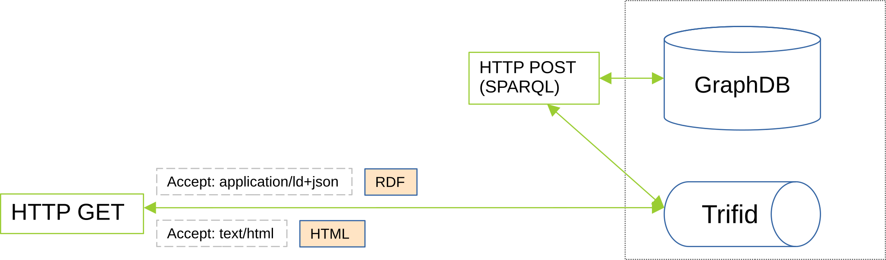